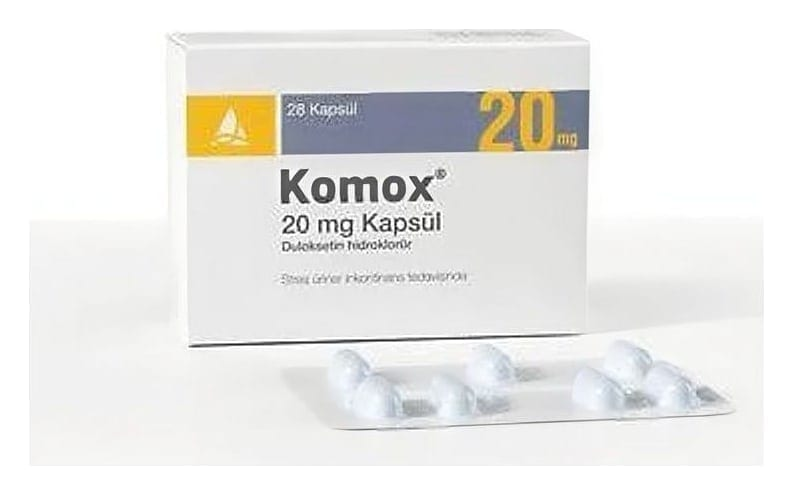

Komox 20 mg Gastro-Rezistan Sert Kapsül ,28 Adet

Ne için kullanılır
KT · Bölüm 1 KOMOX®opak mavi gövde/opak mavi kapaklı sert jelatin kapsüllerdir. 28 kapsüllük ambalaj halinde bulunur. KOMOX®kapsülleri mide asidine karşı koruyucu bir tabaka ile kaplı duloksetin hidroklorür pelletleri içerir. KOMOX®, etkin madde olarak duloksetin içerir. Duloksetin, sinir sisteminde serotonin ve noradrenalin düzeylerini artırır. KOMOX®kadınlarda stres üriner inkontinans (SÜİ) tedavisi ve SÜİ’ın baskın olduğu MÜİ (mikst üriner inkontinans) tedavisi için ağızdan alınan bir ilaçtır. MÜİ (mikst üriner inkontinans), SÜİ (stres üriner inkontinans) belirtilerinin sıkışma tipi üriner inkontinans (ani tuvalete gitme ihtiyacı ile beliren ve tuvalete gitmeden idrar kaçırma) belirtileriyle birlikte olması durumudur. Stres üriner inkontinans gülme, öksürme, hapşırma, ağırlık kaldırma ya da egzersiz gibi fiziksel aktiviteler sırasında hastanın istemeden idrar kaçırması olarak tanımlanan tıbbi bir durumdur.
KOMOX®güldüğünüzde, hapşırdığınızda ya da fiziksel aktivite sırasında idrarınızı tutmayı sağlayan kasların gücünü arttırır. KOMOX®’un etkililiği, Pelvik Taban Kas Egzersizi olarak adlandırılan egzersiz programı ile artar. KOMOX®sığır kaynaklı jelatin içermektedir.